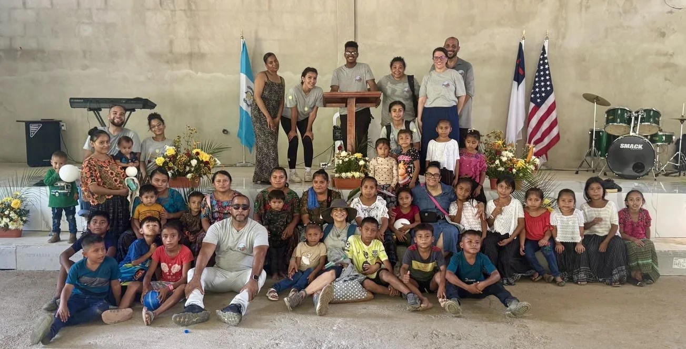
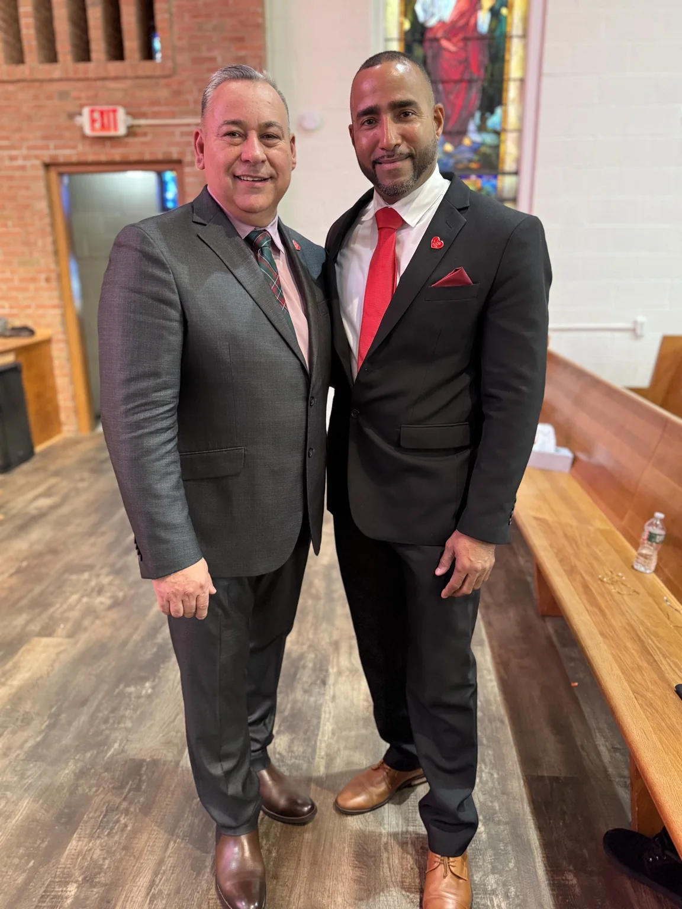
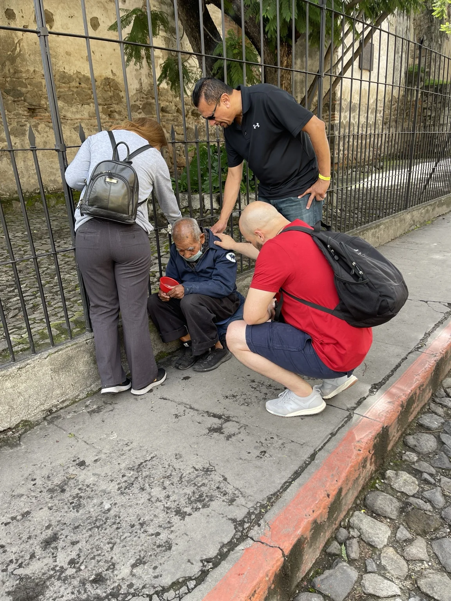
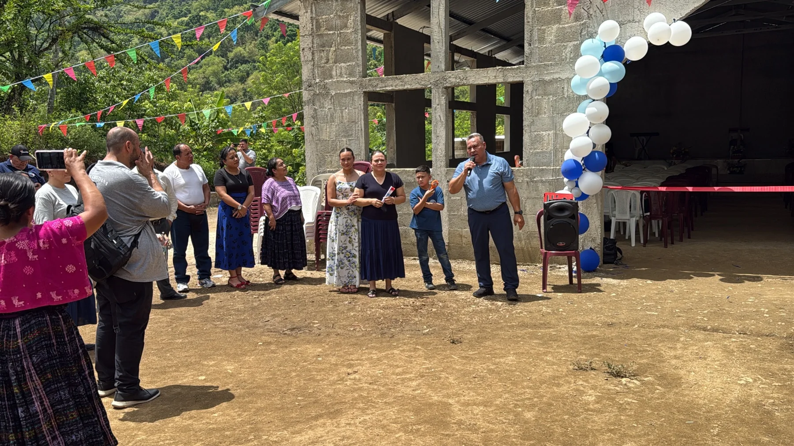

Iglesia Príncipe de Paz · Philadelphia
Una historia de gracia.
Un ministerio con propósito.
Somos una congregación que proclama el evangelio de Jesucristo, sirve a la comunidad y lleva esperanza desde Philadelphia hasta Guatemala.
Próximo encuentro
Miércoles · 8:00 p.m.
3661 N Marvine St., Philadelphia
Bienvenidos
Un lugar para adorar, crecer y servir
La Iglesia Príncipe de Paz en Philadelphia forma parte de la Iglesia Internacional Príncipe de Paz. Nuestras puertas están abiertas para usted y su familia.
Creemos en la predicación fiel de la Palabra de Dios, la oración, la adoración y el servicio compasivo. Nuestra congregación está compuesta mayormente por hermanos de Alta Verapaz, Guatemala, incluyendo comunidades de habla Q'eqchi'.
“El que comenzó en vosotros la buena obra, la perfeccionará hasta el día de Jesucristo.” Filipenses 1:6
Conozca al pastor
Pastor Gilberto Maldonado
Su vida es un testimonio del poder restaurador de Jesucristo.
Después de una niñez marcada por el dolor y años de vida en las calles, fue sentenciado a pasar aproximadamente diecisiete años y medio en prisión. Allí tuvo un encuentro personal con el Señor y entregó su vida a Cristo.
La prisión se convirtió en un campo misionero. Sirvió como maestro bíblico, consejero, músico y pastor interino de una comunidad cristiana de alrededor de 120 internos. Organizó estudios para principiantes, creyentes avanzados y formación ética cristiana, mientras muchas vidas eran alcanzadas por el evangelio.
Al recuperar su libertad, continuó sirviendo fielmente hasta ser llamado al pastorado de la Iglesia Príncipe de Paz en Philadelphia.
Conozca el libro “Rescatado con Propósito” →De las cadenas al propósito
Una vida transformada
Una niñez difícil
Desde los seis años enfrentó separación familiar, dolor e inestabilidad.
Dios lo buscó
Tres días antes del delito que lo llevó a prisión, evangelistas le hablaron de Cristo en Camden.
Conversión en prisión
Un evangelista confirmó el mensaje que Dios ya había puesto en su corazón.
Ministerio tras los muros
Enseñanza, consejería, música, discipulado y liderazgo pastoral.
Libertad y servicio
Tras diecisiete años y medio, salió para continuar la obra que Dios había comenzado.
Pastorado y misiones
Hoy sirve en Philadelphia y participa en misiones en Cobán y Lanquín.

Nuestra congregación
Iglesia Príncipe de Paz — Philadelphia
Una iglesia multicultural y familiar, unida por la fe en Jesucristo y comprometida con la comunidad.
Dirección3661 N Marvine St.
Philadelphia, PA
Philadelphia, PA
ServiciosMiércoles 8:00 p.m.
Sábado 8:00 p.m.
Domingo 10:00 a.m.
Abrir en Google Maps
Sábado 8:00 p.m.
Domingo 10:00 a.m.
Cobertura ministerial
Iglesia Internacional Príncipe de Paz

Honrando a quienes Dios puso en el camino
La congregación de Philadelphia es parte de la Iglesia Internacional Príncipe de Paz, cuya iglesia central está ubicada en 132 Palisade Ave., Garfield, New Jersey.
Con profundo agradecimiento reconocemos el liderazgo, la confianza y el respaldo del Pastor General, Rev. Rodolfo Solórzano. Dios lo utilizó para recibir al Pastor Gilberto Maldonado con brazos abiertos, brindarle oportunidades de servir y acompañarlo en su crecimiento ministerial.
También expresamos nuestro aprecio a Masiel Solórzano, por su apoyo, servicio y labor junto al Pastor Solórzano. Su ejemplo y dedicación forman parte importante de esta historia.
Ver iglesia central en el mapa →Misiones en Guatemala
El evangelio cruza fronteras
Dos viajes, muchas vidas y una sola misión: compartir el amor de Jesucristo.

Cobán · Alta Verapaz
Sirviendo con compasión
Oración, visitas, ayuda comunitaria, evangelismo y comunión con las iglesias locales.

Lanquín · Alta Verapaz
Celebrando una obra para Dios
Adoración, predicación, actividades con niños y la inauguración del templo.
Predicaciones y enseñanzas
La Biblia Nos Habla
Mensajes bíblicos, estudios, testimonios y contenido pastoral para fortalecer la fe y anunciar que Jesucristo sigue transformando vidas.
Visitar canal de YouTube
LA BIBLIA
NOS HABLA
“La Palabra de Dios es viva y eficaz”
TESTIMONIORescatado
Gilberto Maldonado
Rescatado
con Propósito
Gilberto MaldonadoLibro en preparación
La historia no terminó en la prisión
Una autobiografía sobre una infancia herida, la vida en las calles, el encuentro con Cristo detrás de los barrotes y el propósito que Dios reveló a través del servicio, el pastorado y las misiones.
Próximamente
No está solo
Permítanos orar por usted
Comparta su petición. Al enviar el formulario se preparará un mensaje en su aplicación de correo; ningún dato se almacena en esta página.
Le esperamos
Visite la Iglesia Príncipe de Paz
Philadelphia
3661 N Marvine St.
Philadelphia, PA
Miércoles 8 p.m.
Sábado 8 p.m.
Domingo 10 a.m.
Iglesia Central · Garfield
132 Palisade Ave.
Garfield, NJ
Pastor General
Rev. Rodolfo Solórzano